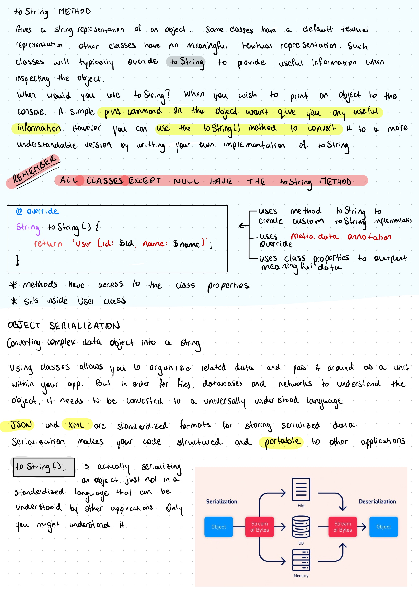
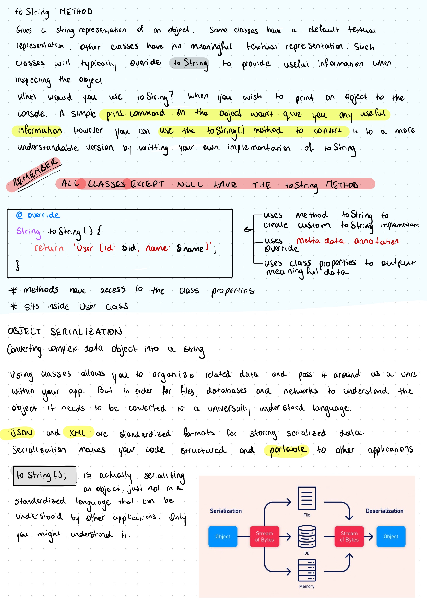

Creating the Site
It took me 24 long, frustrating hours to create this site.
I know I know... it doesn't look very impressive, but the creation of this site involved:
- registering the domains ($)
- installing python. which apparently isn't so straight forward when your mac comes with python already but that version shouldn't be …

 
